Диэлектрики – это вещества, в которых практически отсутствуют свободные носители заряда. Почти все заряженные частицы внутри диэлектрика связаны между собой и не способны передвигаться по объёму тела. Заряды могут только незначительно смещаться относительно своих равновесных положений. Таким образом, диэлектрики в обычных условиях не проводят электрический ток, поскольку свободных носителей тока в них нет. Удельное сопротивление диэлектриков ρ=106÷1015 Ом.м. Для сравнения: удельное сопротивление металлов (проводников) ρ=10-6÷10-8 Ом.м.
При внесении диэлектрика в электрическое поле он поляризуется. Процесс поляризации можно описать на основе представлений о молекулах как электрических диполях.
Электрическим диполем называется система двух одинаковых по величине противоположных по знаку точечных зарядов q и –q (рис.1.1). Плечо диполя (l) – вектор, начинающийся на отрицательном заряде и оканчивающийся на положительном. Диполь называется точечным, если его плечо много меньше расстояний до других тел. Дипольный момент электрического диполя – вектор, равный произведению модуля заряда диполя на плечо диполя 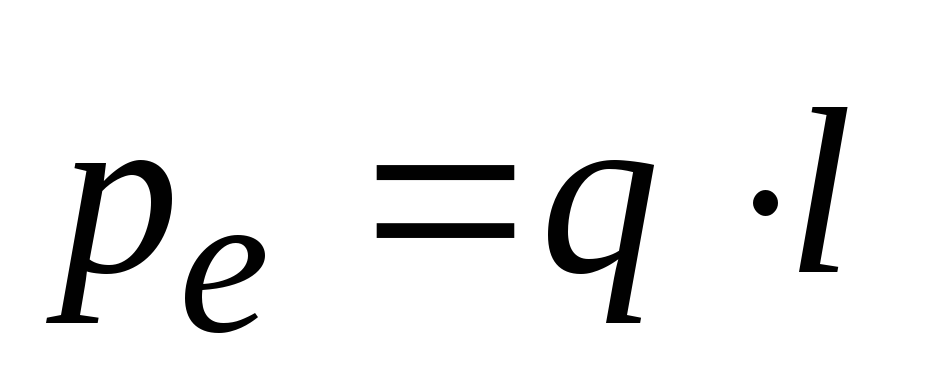
Размерность дипольного момента (Кл*м). В молекулах электроны могут равномерно распределяться по всему её объёму, а могут и смещаться к каким-либо атомам. В первом случае говорят, что молекулы неполярные. К неполярным диэлектрикам относятся инертные газы (гелий He), а также газы с симметричными молекулами (кислород О2, водород H2, азот N2); органические жидкости (бензол, масла, бензины); некоторые твёрдые тела (парафин, пластмассы).
Во втором случае в молекулах диэлектрика образуются области с положительным и отрицательным зарядом. Каждая молекула полярного диэлектрика представляет собой электрический диполь. Такие диэлектрики называются полярными. Например, в молекулах хлористого водорода HCl электронное облако смещено от атома водорода к атому хлора. Молекулы воды Н2О также являются полярными: электронная плотность смещена с атомов водорода к кислороду (рис.1.2).
В неполярной молекуле под действием электрического поля происходит смещение электронного облака (рис.1.3). У молекулы возникает индуцированный дипольный момент, направленный по полю; молекула поляризуется.
Индуцированный дипольный момент пропорционален напряжённости поля (для не слишком сильных полей):
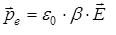 (1.1)
Здесь ε0=8.85.10-12 Ф/м – электрическая постоянная, β – поляризуемость молекулы; размерность [β]=м3. Поляризация за счет смещения электронов называется электронной.
На полярную молекулу-диполь в электрическом поле действует вращающий момент силы.
поворачивающий её по полю (рис.1.3, а). В результате возникает преимущественная ориентация молекул-диполей по полю (рис.1.4, б). Полной ориентации препятствует тепловое движение молекул. Поляризация диэлектрика за счёт ориентации молекул-диполей называется дипольной (ориентационной).
В твёрдых диэлектриках с ионной кристаллической решёткой (например, хлористый натрий NaCl) ионы во внешнем поле слегка смещаются в противоположные стороны: положительные – по полю, отрицательные – против поля. Это – ионная поляризация.
При внесении диэлектриков во внешнее электрическое поле вследствие их поляризации в любом макроскопически малом объёме ΔV диэлектрика появляется отличный от нуля суммарный дипольный электрический момент. Количественной мерой поляризации диэлектрика является вектор поляризации (поляризованность), численно равный суммарному дипольному моменту единицы объёма вещества:
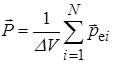 (1.2)
где 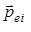 – электрический дипольный момент i-ой молекулы, N – общее число молекул в объеме ΔV. Размерность поляризованности:
Опыт показывает, что в слабых полях, с которыми обычно имеют дело на практике, величина вектора поляризации пропорциональна напряженности электрического поля (см. (1.1)):
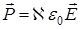 (1.3)
где 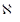 – диэлектрическая восприимчивость диэлектрика (безразмерная величина).
Поместим диэлектрик во внешнее однородное электрическое поле 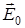 , созданное конденсатором (рис.1.5).
В результате поляризации диэлектрика на правой грани диэлектрика вблизи отрицательно заряженной обкладки конденсатора появляется положительный поляризационный заряд с поверхностной плотностью +σ′, на левой грани – отрицательный заряд (–σ′). В неоднородном электрическом поле могут возникать еще и объёмные поляризационные заряды. Поляризационные заряды создают в диэлектрике дополнительное поле с напряжённостью , величину которой для нашего простейшего случая можно найти аналогично полю плоского конденсатора:
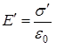 (1.4)
По принципу суперпозиции напряженность результирующего поля в диэлектрике 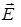 будет равна векторной сумме напряженностей внешнего электрического поля 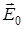 и поля 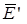, обусловленного нескомпенсированными поляризационными зарядами:
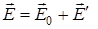 (1.5)
Для изотропного диэлектрика, помещенного в однородное внешнее электрическое поле, эти векторы направлены в противоположные стороны, поэтому
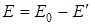 (1.6)
т.е. напряженность электрического поля в диэлектрике меньше напряженности этого поля в вакууме.
Поляризованность диэлектрика по определению (1.2) равна:
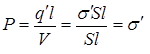 (1.7)
где q′l – электрический дипольный момент связанных зарядов, q′= σ′S – величина связанного поляризационного заряда на всей поверхности диэлектрика, S – площадь обкладки конденсатора, l – расстояние между обкладками (толщина диэлектрика), V=Sl – объем диэлектрика. (Предполагаем, что диэлектрик занимает весь объем конденсатора.)
Из (1.2-1.7) получим:
откуда, решая уравнение 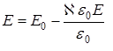, найдём:
Обозначим
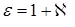 (1.8)
тогда
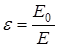 (1.9)
Величина ε называется диэлектрической проницаемостью среды. Она показывает, во сколько раз напряженность электрического поля Е в диэлектрической среде меньше, чем напряжённость Е0 в вакууме.
Согласно (1.8), ε≥1 (ε=1 для вакуума). В таблице 1.1 приводятся значения диэлектрической проницаемости для некоторых диэлектриков.